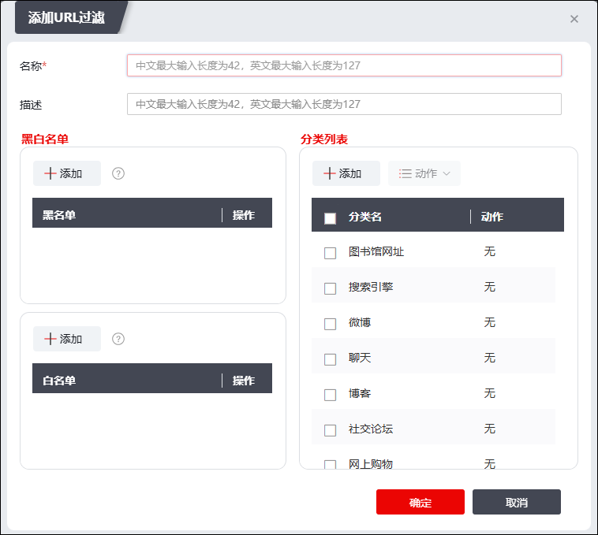
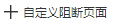
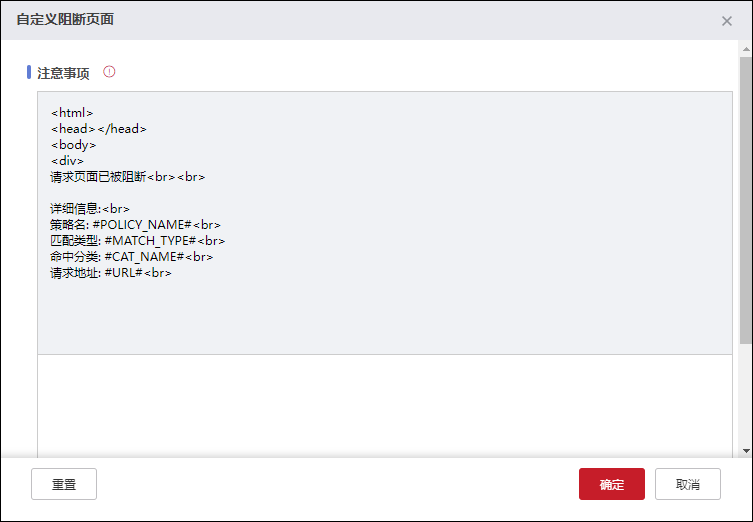

随着互联网应用的迅速发展，计算机网络在经济和生活的各个领域迅速普及，使得信息的获取、共享和传播更加方便，但同时也给企业带来了前所未有的威胁：
1）员工在工作时间随意地访问与工作无关的网站，严重影响了工作效率。
2）员工随意访问非法或恶意的网站，造成公司机密信息泄露，甚至会带来病毒、木马和蠕虫等威胁攻击。
3）在内部网络拥堵时段，无法保证员工正常访问与工作相关的网站（如公司主页、搜索引擎等），影响工作效率。
基于此，NGFW提供了URL过滤功能。URL（Uniform Resource Locator）过滤主要用于控制用户访问的网页URL，放行或禁止用户访问某些网页资源，达到规范上网行为的目的。
当用户的URL访问请求匹配到某条URL规则或域名规则后，NGFW会根据URL过滤方式对此URL访问请求做出相应的处理。NGFW提供基于黑白名单和URL分类的过滤方式，达到精确管理用户上网行为的目的。
l黑白名单
NGFW将解析出的URL地址与黑白名单进行匹配，优先匹配白名单，再匹配黑名单，如果匹配白名单则允许该URL请求，如果匹配黑名单则阻断该URL请求，不允许用户对该URL进行访问。
lURL分类库
URL分类分为自定义分类和预定义分类，一个URL分类可以包含若干条URL，一条URL可以属于多个分类。
在配置URL策略之前，需要先进行URL类别的配置，关于URL类别的设置具体请参见 URL分类。
| 步骤1 | 选择 。 |
| 步骤2 | 点击“添加”，弹出“添加URL过滤”窗口，如下图所示。 |

在设置URL过滤策略时，各项参数的具体说明如下表所示。
参数 |
说明 |
|---|---|
名称 |
必填项，设置URL过滤规则的名称。 |
描述 |
设置对URL过滤规则的具体描述。 |
黑名单 |
设置要过滤的敏感URL地址，将其加入黑名单。 说明： 1）参数值是字符串（包括IP地址和域名），不支持正则表达式； 2）最多不能超过127个字符。 |
白名单 |
设置加入白名单的URL地址。 |
分类列表 |
设置对匹配指定URL类别条件的数据报文的执行动作。选择配置好的URL分类，或点击『添加』，新建URL分类。关于URL分类的具体配置请参见 URL分类。 可选项：无、放行、阻断、告警。 “无”表示默认不进行检测；“放行”表示允许访问该URL；“阻断”表示禁止访问该URL；“告警”表示允许用户访问该网站，但产生URL过滤告警日志。 |
| 步骤3 | 点击【确定】按钮完成URL过滤策略的添加。 |
| 步骤4 | 点击“  ”按钮可自定义阻断URL的页面，如下图所示。 |

填写需要展示在阻断界面上的自定义内容即可，点击“”可查看注意事项页面。